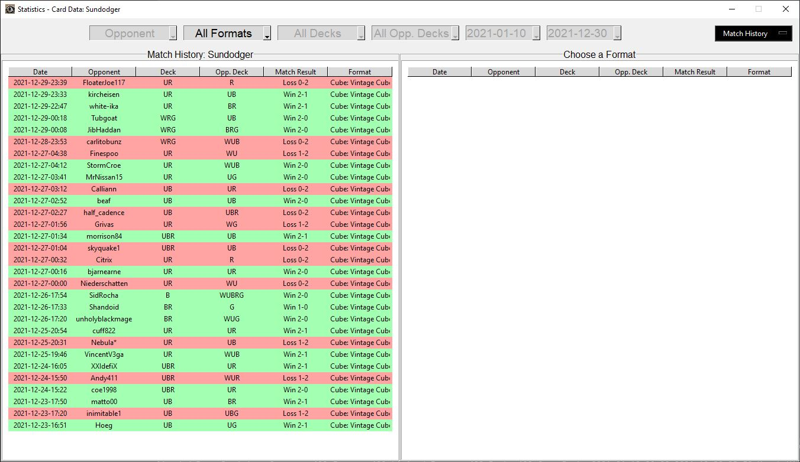

Dashboards
Back to Project Description.
Statistics Window
The Statistics window will allow you to view dashboards showing descriptive statistics and basic analysis of your dataset.
Apply the Hero setting to activate the Statistics button in the left menu of the main window.
Match History
Match History is the first dashboard shown and will display the results of your 30 most recent matches. It can be filtered by Format using the dropdown menu at the top of the window.
Choose a different dashboard to view (Matches, Games, Plays, Opponents, or Cards) using the top right dropdown menu.
After choosing a dashboard, the metrics shown can be filtered using the dropdown menus across the top of the window.

×